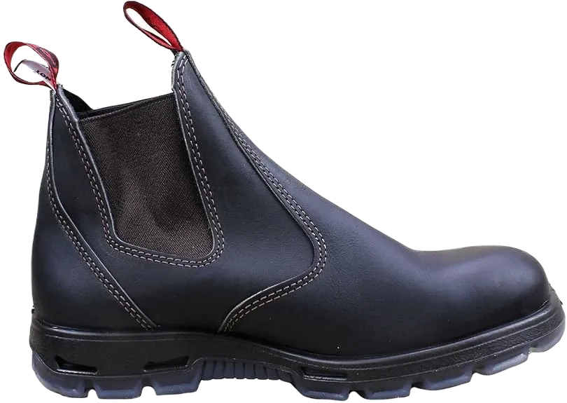
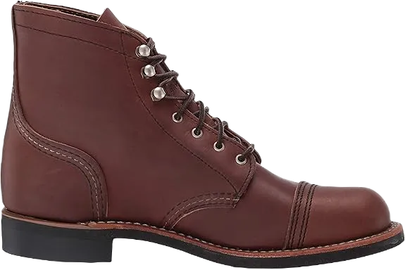
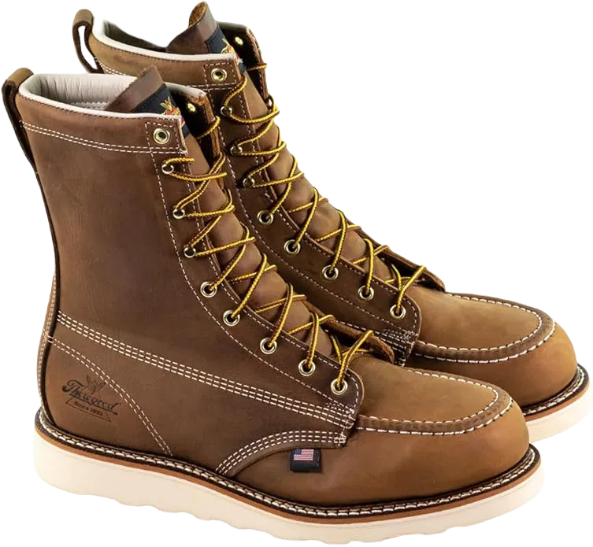
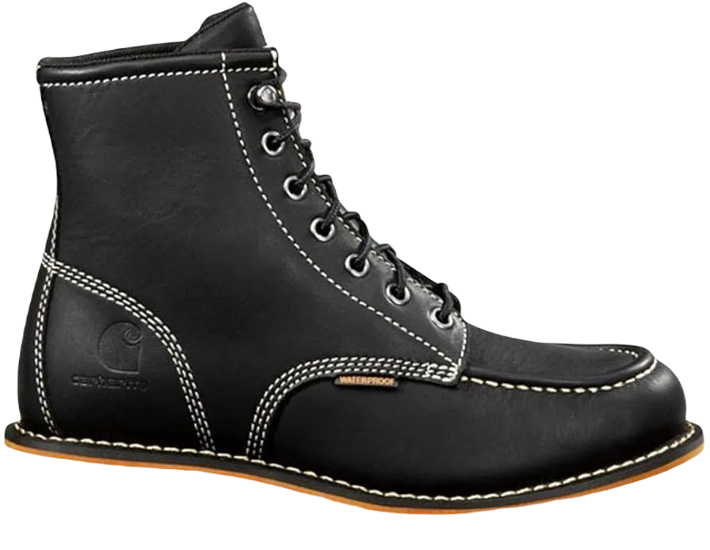
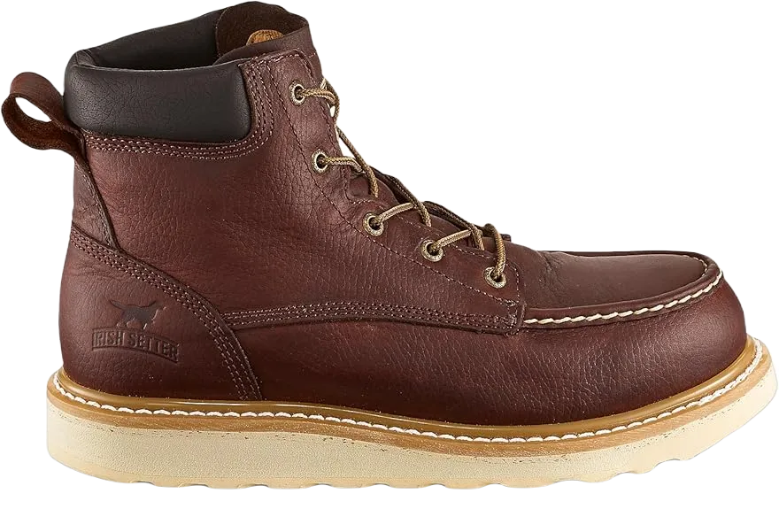
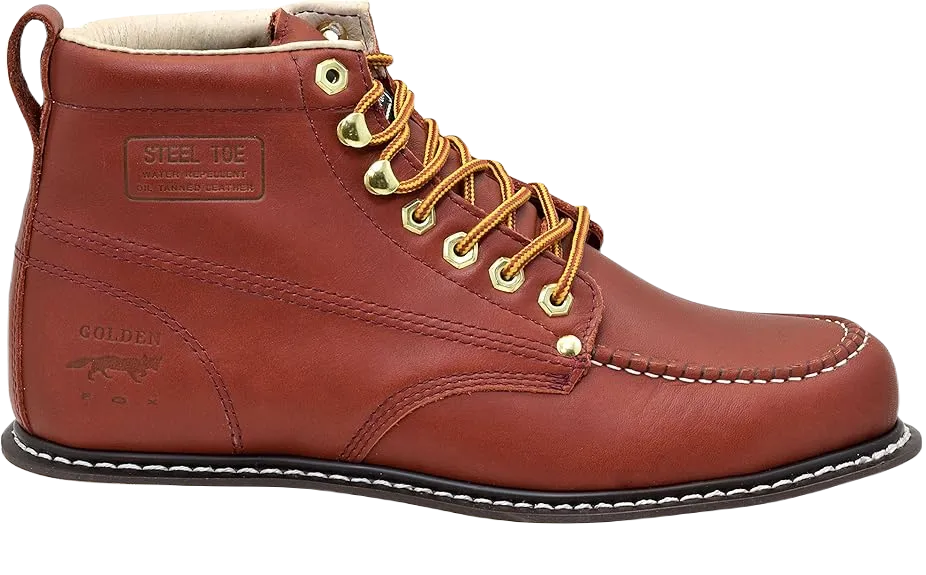

17 Best Carpenter Work Boots
If you’re involved in carpentry or woodworking, you know the demands of keeping your hands busy all day while constructing useful items and lifting heavy materials in your workshop. In this scenario, the last thing you want is to get injured by a sharp or heavy object falling on your feet. That would be a major setback, wouldn’t it?
To help you find the right footwear, I’ve compiled a list that focuses on the essential features you need for protection and comfort. With this in mind, you can be confident that the following Wellington boots are truly the best carpenter work boots available on the market.
-
#1
Red back safety Bobcat
A friend of mine swears by Redback boots, and he’s the one who encouraged me to give them a try. I haven't looked back since, as these boots are incredibly comfortable and genuinely protective.
The steel toe caps provide excellent protection for my feet while I work, making these boots very safety-conscious. Additionally, the 180mm flexible sides make them easy to put on and take off, yet they stay securely in place no matter what I'm doing.
Overall, these are definitely among the most comfortable boots I've ever worn! -
#2
Irish Setter Aluminum-Toe Boot
.webp)
My next pick for the best carpenter work boots is the Irish Setter Aluminum-Toe work boots. Just take a look at these features, and you'll see what I mean!
As a craftsman, comfort is crucial for keeping my feet feeling great throughout the day. The Irish Setter boots are both comfortable and lightweight, thanks to their cushioned collar and removable PU footbed, which is designed for all-day comfort. Pull-on work boots with a back pull loop make them easy to slip on and off, which is a huge advantage when you're in a hurry.
Overall, these boots combine practicality and comfort, making them an excellent choice for anyone in the trade! -
#3
Purple Wing History Iron Ranger Boot
The Red Wing boots are definitely among my top choices when it comes to work boots. I can't quite put my finger on what it is about Red Wing, but they truly excel at making exceptional work boots. Any craftsman would be thrilled to know that these boots come with impressive features.
Not only are these boots highly functional, but they also look fantastic, making them great for wearing both on and off the job. Trust me, take a look at them, and you’ll likely fall in love with them just as quickly as I did.
With their combination of style and durability, these boots are a must-have for anyone in the trade! -
#4
Thorogood American historical past
.webp)
The Thorogood American Heritage work boots definitely earn a spot on my list of the best carpenter work boots available. Let me explain why:
Having metal toe protection is essential for any carpenter's work boot, and with these Thorogood boots, which meet ANSI/ASTM I75 and C75 safety standards, you can be confident that your toes will be well-protected while you work.
These boots also feature a composite shank and a removable cushioned footbed, ensuring your feet stay comfortable and supported throughout the day. -
#5
Timberland pro men’s Pit Boss
.webp)
For my final pick among the best carpenter work boots on the market, I’d like to introduce you to a pair of boots that I truly cherish: the renowned Timberland Pit Boss. Let me explain why.
The Timberland Pro Men’s Pit Boss steel-toed boots are a solid choice for any carpenter. Despite their price, these boots offer an impressive level of comfort and protection.
Equipped with Timberland Pro rubber outsoles, these work boots are abrasion-resistant, slip-resistant, and oil-resistant, ensuring added safety while on the job. Working as a carpenter can be hazardous, so having boots with steel toe protection is essential. Durability is also crucial; with nylon shock-dispersion plates and Goodyear welt construction, these boots are among the most reliable work boots available at their price point. -
#6
Wooded area seasoned Pit-Boss
.webp)
Regarding comfort, I appreciate the thick cushioning around the collar. Additionally, the Timberland Pro line is equipped with 24/7 Comfort Suspension technology. This comfort system reduces stress on the feet, legs, and lower back, allowing me to work long hours without discomfort.
One of the significant issues that many users have encountered with these work boots is that the material on top of the sole wears out faster than expected. Therefore, it’s crucial for customers to take proper care of their work boots.
Timberland Pro's Praline, especially the steel-toe version, is an excellent choice for construction work. While it may be on the pricier side, it’s an investment that pays off over time. -
#7
Thorogood historic beyond Mock Toe
Additionally, these soles can withstand electric shocks of up to 18,000 volts. I’ve worked in high-voltage areas before, and these exceptional work boots provide protection against those dangerous shocks, allowing me to work without worries.
The shoes feature a shock-absorbing footbed with a Peron comfort insole. This unique cushioning allows me to work for extended periods while carrying heavy loads. Generally, I experience less lower back and leg pain after several hours on the job, as the soft padding makes work more bearable and comfortable.
The treads on the soles may wear down over time. However, as much as possible, wearers should avoid walking on particularly rough surfaces to prolong the lifespan of the boots. -
#8
Wolverine smooth Toe Shoe
.webp)
This Wolverine boot is crafted from full-grain waterproof cowhide, making it ideal for woodworkers working in rain-prone areas. It's also a great choice for farmers, as they have less to worry about when it comes to cleaning and maintaining their work boots.
One issue that many customers face with work boots is the soles. They feature button-like tabs on the sole that can break off quickly. Once they fall off, the boots become increasingly difficult to put on, and some wearers even report developing blisters as a result.
Despite this minor flaw, the Wolverine Men’s Floorhand work boot remains an affordable option among the best shoes for craftsmen, offering good quality without breaking the bank. -
#9
At any point Boots Gentle Toe Boot
.webp)
This work boot is constructed from 2.0 mm nubuck cowhide, providing exceptional durability and protection against harsh environments. According to some customers, the nubuck leather on these boots is easy to clean; they simply wipe off the dirt and then use a damp cloth to clean the surface.
These comfortable work boots are designed with Goodyear Welt construction, making them one of the toughest options available. Additionally, the stylish design of the work boots makes them suitable for casual wear as well.
Although the Boots Tank Men’s Soft Toe Boots are affordable, they still offer a significant amount of protection that is ideal for the workplace. -
#10
Wolverine Composite Work Boot
.webp)
Wolverine excels in providing both comfort and performance. This work boot features a CarbonMax toe cap, a lightweight protective element that safeguards the wearer from falling hazards while offering extra toe space. It's a combination of toe protection and comfort in one package.
Additionally, the boots are versatile enough for outdoor activities like hiking and walking, making them a favorite among customers for exploring nature. Many users have noted that the work boots tend to fit snugly, so ensure there's enough room for breathability when lacing them up.
The Wolverine Men’s Overpass is an excellent all-around work boot. In fact, Wolverine boots are impressive across the board. I highly recommend them to anyone working in rainy conditions, as their waterproofing capabilities are outstanding. -
#11
Sharp software program gentle Toe Boot
.webp)
I’ll start with the toe covers, as I believe they are a crucial feature of this work boot, providing flexibility for craftsmen who need to navigate various levels of construction. It’s essential that the impact resistance meets ASTM F2892 EH standards. While the soft toe covers offer some protection against falling hazards, they are primarily designed for comfort.
Notably, this work boot stands out from the rest with its electric shock-resistant capabilities. The outsoles are rated for electrical hazards, protecting me from live electrical circuits that I might not see lying around.
Moreover, this work boot is environmentally friendly, as the company utilizes high-quality, budget-friendly leather. The Sharp Utility Men’s San Jose soft toe work boots excel in adaptability, comfort, and slip resistance. Although they may lack impact protection, they more than make up for it in other areas. -
#12
Earhart informal Wedge
One of my favorite features of this work boot is its lightweight design. When the package arrived, it felt different from other work boots I’ve tried. Once I put them on, I was pleasantly surprised by how light they felt. This makes them an excellent choice for a craftsman like me, as heavy footwear often causes strain on my legs during long hours on the job.
Many wearers of these boots have commented that they are the most comfortable they’ve ever worn. I wholeheartedly agree with them because the cushioning in the insole is incredibly soft. Moreover, the padding effectively alleviates pressure, providing a comfortable experience throughout the day.
Overall, the combination of lightweight construction and effective cushioning makes these boots a standout choice for anyone needing comfort during long work hours. -
#13
Red back steel Toe Work Boot
This Australian-made work boot is crafted from 2.5 to 2.7 mm thick cowhide, making it 20% stronger than standard work boots. Its durability exceeds the global standards for safety, making it an excellent choice for those who work in environments where dropping heavy items is a risk.
Typically, my soles ache after a few hours on the job, but the Redback Men’s Wildcat boots are designed anatomically to provide support and reduce impact. This feature also helps prevent foot fatigue, which can lead to leg and back pain over time.
However, since these boots do not have laces, it's essential for consumers to ensure they select the correct size to achieve a proper fit. -
#14
Irish Setter Aluminum Toe Work Boot
The toe area of these boots features trout-processed leather, which is handcrafted specifically by the S.B. Foot Tanning Company. This type of leather is a hallmark of the Irish Setter brand.
Its highly specialized material provides excellent protection against electrical hazards, making it a safe choice for various work environments.
This Irish Setter men’s work boot is ideal for those who don't typically work in wet conditions. Nevertheless, its unique features, including aluminum toes, make it an outstanding option for a durable work boot. -
#15
Forest vicinity seasoned
.webp)
It's easy to see what sets these shoes apart: the toe caps. Unlike most work boots on this list, the toe cap is distinct from the full leather design. The Forest area has upgraded these boots with a composite safety toe based on their Titan model, providing lasting protection that exceeds A11UI and 1158A standards.
However, some customers have noted that the laces on these work boots can be somewhat fragile.
The pins holding the lacing openings may come loose if not handled carefully. Ensuring that the laces are properly tied and not overly tight can help prevent similar issues for wearers. -
#16
Sharp utility Pittsburgh steel Toe
.webp)
These work boots are designed to accommodate customization while ensuring that the wearer remains comfortable throughout the day. They feature locking metal-trim hooks to secure the lacing system, alleviating concerns many workers, farmers, and hunters have about tripping over loose shoelaces. This issue is effectively addressed with these reliable work boots.
It's hard to discuss this work boot without highlighting the metal toe protection.
These toe caps are impact-resistant and provide a high level of safety, allowing carpentry workers to avoid injuries from falling tools, debris, or other work-related hazards. -
#17
Exceptional Fox Mock Toe Work Boots
The essential safety gear includes a hard hat, goggles, and gloves. However, many overlook the importance of quality footwear. If woodworkers want to protect themselves from the various hazards present in their work environment, they must invest in sturdy, proven work boots.
These boots are essential for ensuring safety on the job.
By prioritizing footwear, woodworkers can enhance their overall protection and performance while working in potentially dangerous conditions.